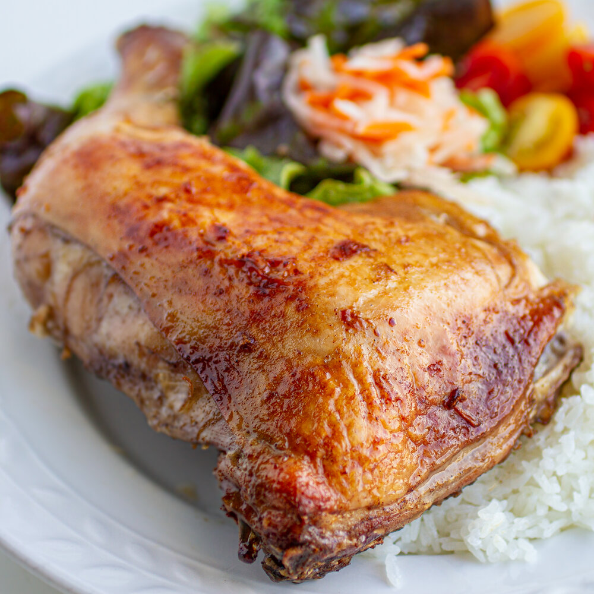

Vietnamese Crispy Roasted Chicken

Description
Vietnamese roasted chicken (Ga Roti) is aromatic, tender, soy-marinated chicken,
usually served with steamed rice, lettuce, and picked vegetables.
Ingredients
Chicken
- 5 chicken leg quarters
- 3 tablespoons Maggi Seasoning
- 3 tablespoons granulated sugar
- 1 teaspoon sea salt for seasoning and 1 tablespoon sea salt for cleaning
- 1/2 teaspoon Chinese Five Spice Powder
- 1 shallot (peel and mince)
- 3 garlic cloves (peel and mince)
- 1 tablespoon minced fresh ginger
Salt / Vinegar Mixture
- 1/2 teaspoon sea salt
- 2 teaspoons white or rice vinegar
Steps
- Clean the chicken by scrubbing it with 1
tablespoon salt. This helps get rid of any foul
poultry smell and surface residue. Rinse the
chicken under cold running water to wash off salt
then drain dry.
- In a large mixing bowl, combine Maggi Seasoning,
sugar, remaining salt (1 teaspoon), five-spice
seasoning powder, shallot, garlic, and ginger.
Add chicken and marinate for at least 30 minutes
or overnight in the fridge for tastier results.
- Preheat oven to 425°F. Line a large baking sheet
with foil or parchment paper to reduce cleanup
then place a wire rack on top. Lay chicken skin
side down with spacing in between and bake for
30 minutes. Flip and repeat for additional 30
minutes.
- In a small bowl, mix together salt and vinegar.
Using a pastry brush, slather the mixture on the
skin of the chicken. Continue to bake for 10-15
more minutes until golden brown.